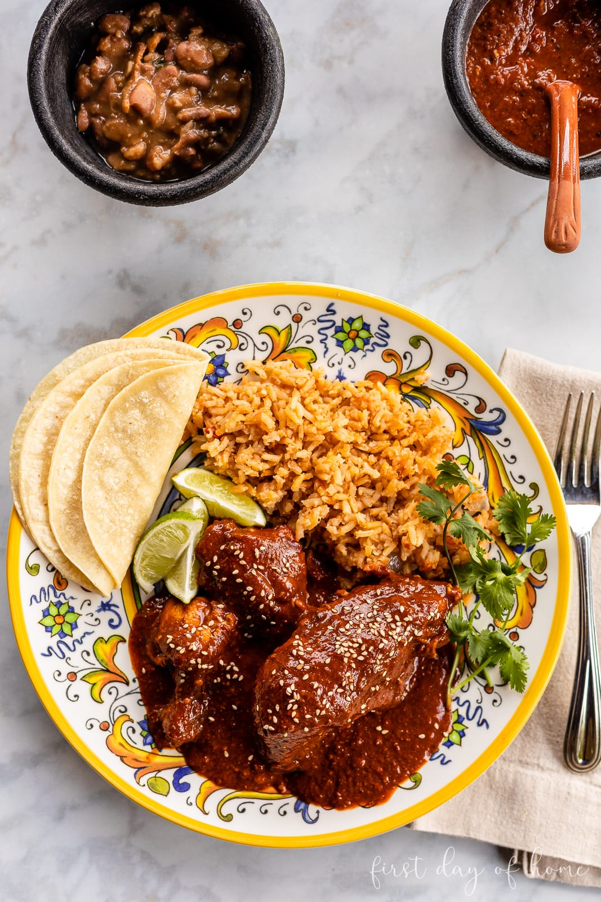

Ingredients
Chicken Broth
- 2 small fryers (about 3 lbs each), cut in pieces
- 2 sticks celery, sliced
- 3-4 sprigs cilantro
- 1/2 bell pepper, sliced
- 1 small yellow onion, quartered
- 1 clove garlic, minced
- Salt and pepper, to taste
Mole Sauce
- 8 guajillo chiles, deseeded, stems removed, and rinsed
- 8 pasilla chiles, deseeded, stems removed, and rinsed
- 8 ancho chiles, deseeded, stems removed, and rinsed
- 1/2 yellow onion, quartered
- 1 roma tomato
- 1 tomatillo, quartered
- 1/4 cup raisins
- 4 tablespoons sesame seeds
- 4 tablespoons sliced almonds
- 2 tablespoons pepitas
- 2 cloves garlic, sliced
- 1/2 teaspoon peppercorns
- 2 cloves
- 1 bolillo (small pan frances)
- 1 corn tortilla
- 8 Ritz crakers(or similar)
- 2-3 tablespoons vegetable oil (for toasting)
- 1 tablet (3.2 ounces) Mexican chocolate
- Salt and sugar to taste
Description
Mexican Mole Sauce is made with layers of complex and bold flavors, simmered together over a long period of time before being blended until smooth. Learn how to make this delicious chicken mole and serve with warm rice, beans, wrapped in tortillas, or drizzled over your favorite tacos, nachos, and veggies.
Recipe credits:
-
Recipe from firstdayofhome.com
Steps
Chicken Broth
- In a large stock pot or dutch oven, bring 9 cups of water to a boil. Then, add the chicken pieces.
- Continue boiling the chicken on medium heat for 15 minutes. Skim off any foam that surfaces.
- Add all vegetables to the soup, and continue boiling for 15 more minutes.
- Remove the chicken pieces, and set them aside for later.
- Strain most of the vegetables from the soup, and retain the broth for the mole sauce.
Mole Sauce
- Begin dry roasting each ingredient (one at a time) in a greased skillet or saucepan, except for the chocolate and breading (bolillo, tortilla, and crackers). The peppers, onion, tomato, and tomatillo may take 2-3 minutes, while the seeds and spices may only require 1-2 minutes of roasting. Take care not to heat the peppercorns too long, as this can cause bitterness.
- Add enough oil in the skillet to make the corn tortilla crisp and brown the crust of the bolillo, pressing it flat if needed. In the remaining oil, lightly toast the crackers.
- Blend the sesame seeds in a grinder or mortar and pestle (molcajete). Reserve a small amount to sprinkle on top of your mole as garnish. Then, separately, grind the pepitas and peppercorn/cloves.
- Add all mole ingredients to the chicken broth, including the chocolate disk, and simmer on low heat for 15-20 minutes. Do not add the chicken at this step.
- Once the ingredients are well steeped, blend the mole sauce in a food processor, working in batches if necessary. As a final step, add more salt or sugar to taste.
- You can freeze some of the mole sauce if desired. Otherwise, add a tablespoon of oil to a pan before adding the mole sauce and cooking it slightly before adding your chicken pieces.
- Once the chicken is well coated, serve it with a garnish of toasted sesame seeds on top.